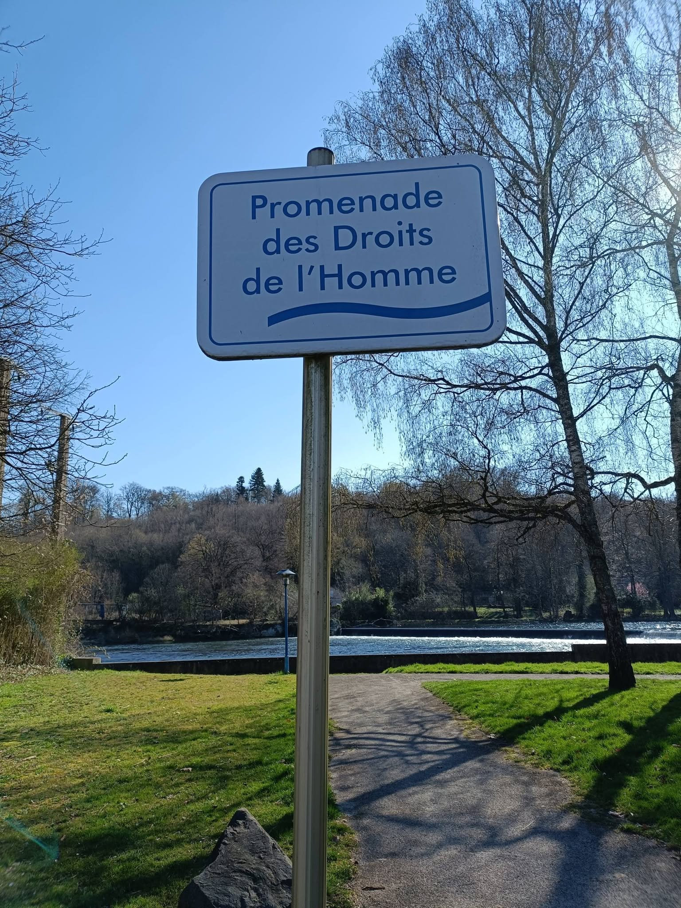

Promenade des droits de l'homme
Sous le ciel pâle de Valentigney,
la Promenade s’étire
comme une pensée lente,
et le Doubs murmure à voix basse
les serments anciens
que l’homme oublie.
Les arbres,
témoins silencieux,
penchent leurs branches
comme des juges fatigués,
ils ont vu passer des pas lourds,
des espoirs neufs,
des colères étouffées.
Ici, chaque pierre semble dire :
« Nul n’est né pour courber l’échine »,
et pourtant le vent hésite,
comme s’il doutait encore
des promesses gravées.
Une enfant rit,
sa voix éclabousse l’air,
pure comme une première liberté,
et son rire traverse le fleuve
sans demander la permission à personne.
Plus loin,
un vieil homme marche lentement,
ses mains portent l’histoire des luttes,
il sait que les droits ne sont pas des mots,
mais des braises
qu’il faut protéger du froid.
Le Doubs continue,
indifférent et fidèle,
il ne choisit ni camp
ni drapeau,
mais il emporte tout —
les injustices,
les cris —
et parfois,
les illusions trop lourdes.
Sur cette promenade
aux noms solennels,
l’humanité se cherche encore,
entre l’ombre des arbres
et la lumière de l’eau,
entre ce qu’elle proclame…
et ce qu’elle devient.
Djamel Metref
Valentigney le 18 mars 2024

← Tous les poèmes
Promenade des droits de l'homme
Carnets de voyages · Liberté et justice